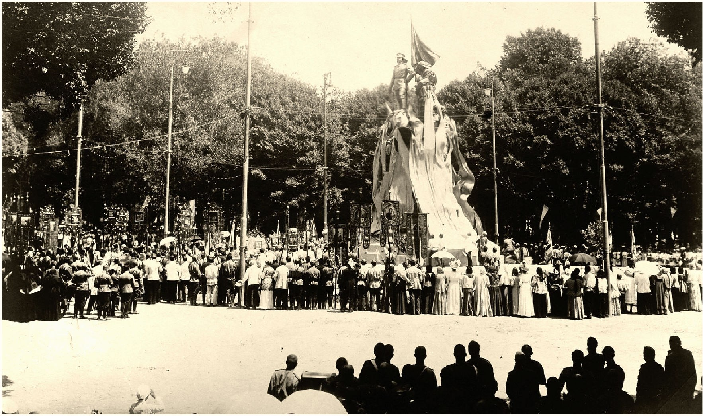

TARIXIY FOTOALBOM · 1900–2000-YILLAR
O‘ZBEKISTON RESPUBLIKASI MUSTAQILLIGINING 35 YILLIGIGA BAG‘ISHLANGAN
TOSHKENT
Kecha va Bugun
❧

Sobiq Kaufman skveri — Amir Temur xiyoboni, 1910-yillar
Muallif: Asilbekov Ozodbek·Toshkent texnika universiteti (ToshTech)
20 TA JOY · 40 TA SURAT · HAR BIR JUFTLIK GOOGLE MAPS KOORDINATALARI BILAN
TOSHKENT — 2026